Visual Projects / Multimedia exhibition / 2025
Stories
Seldom Told
What happens when the effort to forget becomes the clearest evidence of remembering?
I tried to tear, obscure, cross out, and distort a written memory. The original moment remained recognizable, and the damaged surface made it return even more sharply. This exhibition follows that paradox through two posters, physical paper works, an audio layer, and a film.
A memory changes form before it disappears.
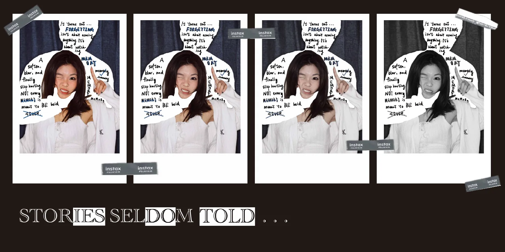
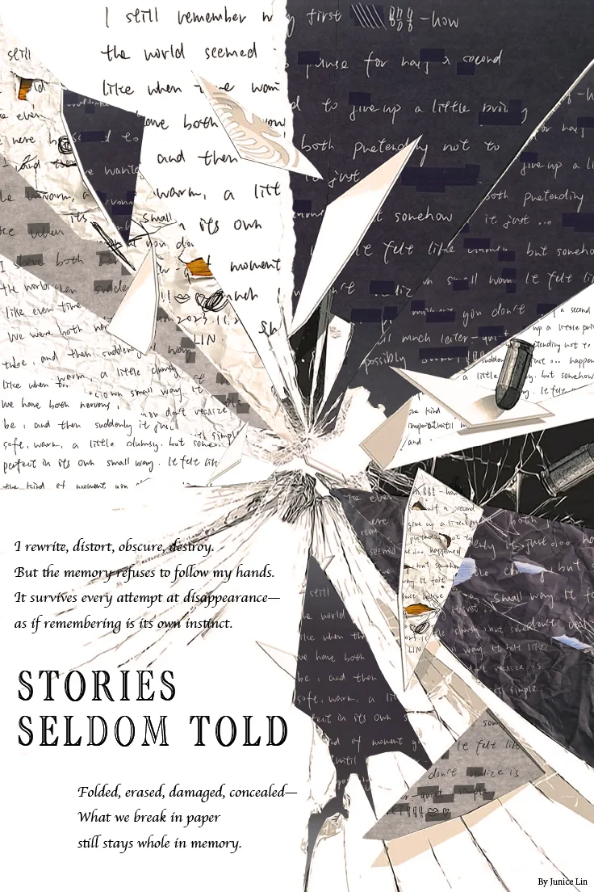
The archive becomes material.
The handwritten text survives across different physical states. These photographs document the group of pages, their placement, and the worked surface.
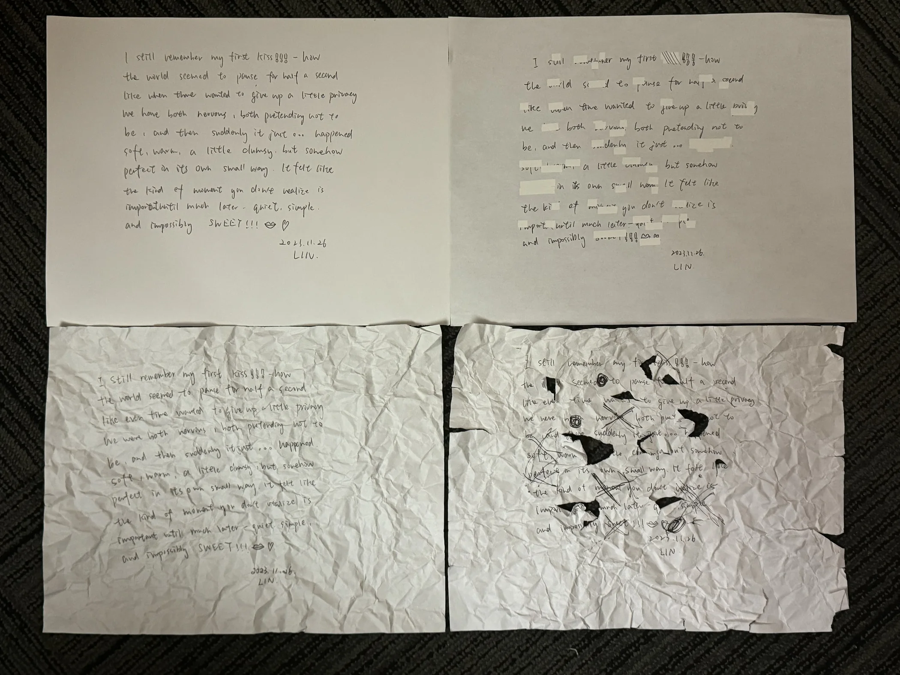
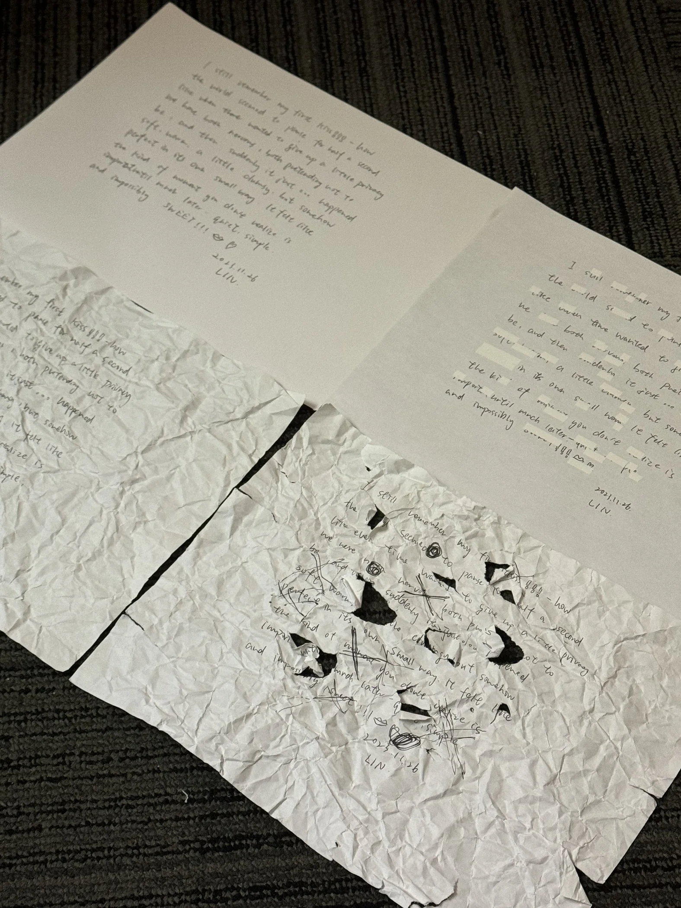
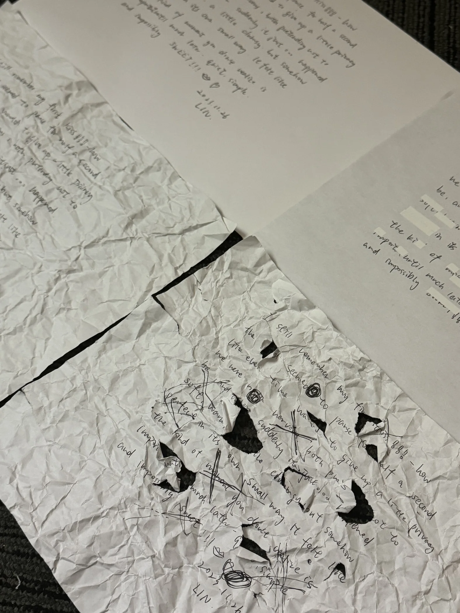
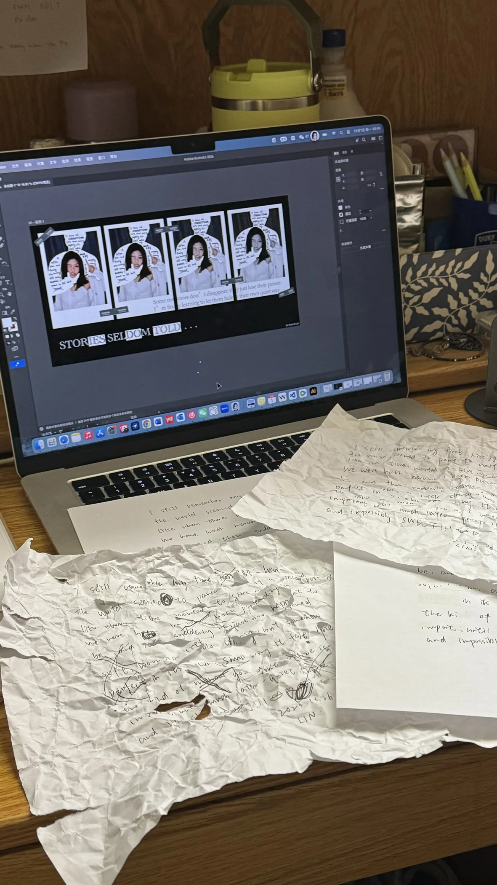
Destruction, photographed and scanned.
These two records show the same damaged piece. The photograph retains its physical folds and surrounding surface; the scan makes the missing text and cuts read differently. Neither is an erasure.
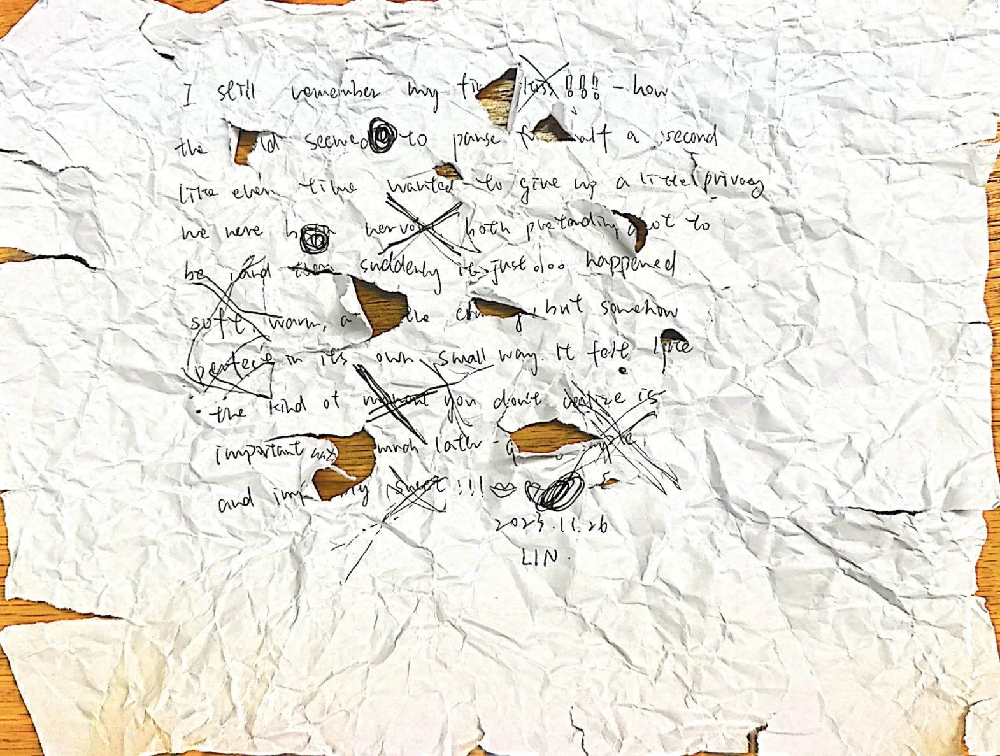
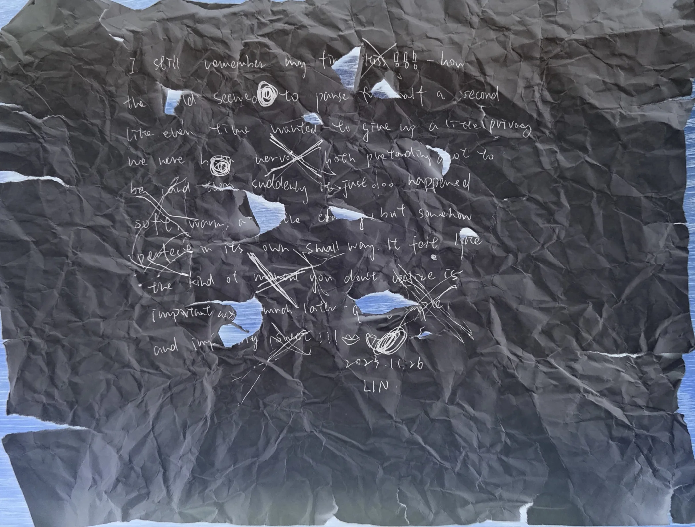
The marks left by trying to forget.
Further documentation of the written page: crumpling, tearing, concealment, and partial loss. The text changes, while the act of damaging it remains visible.
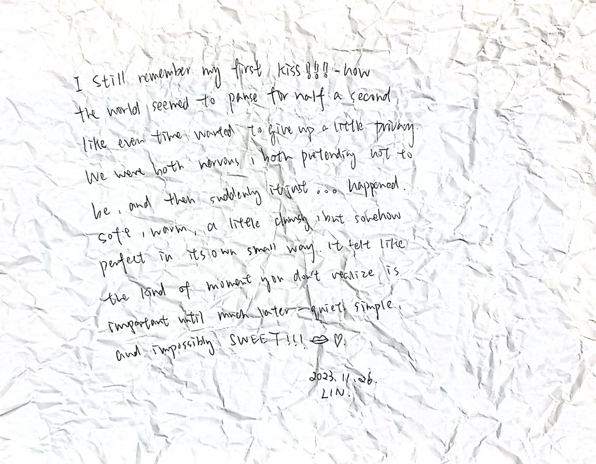
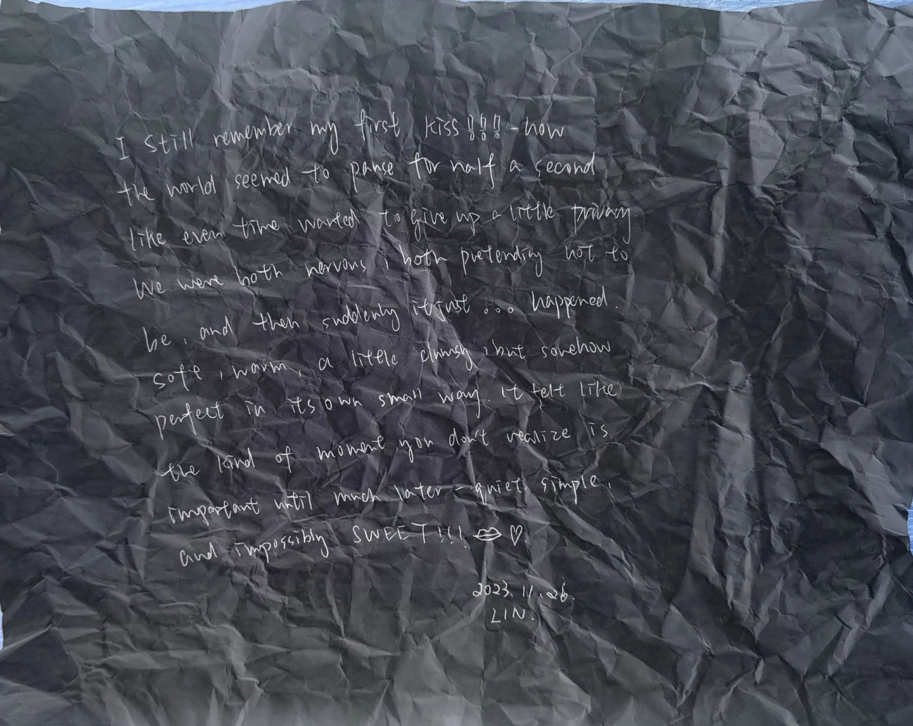
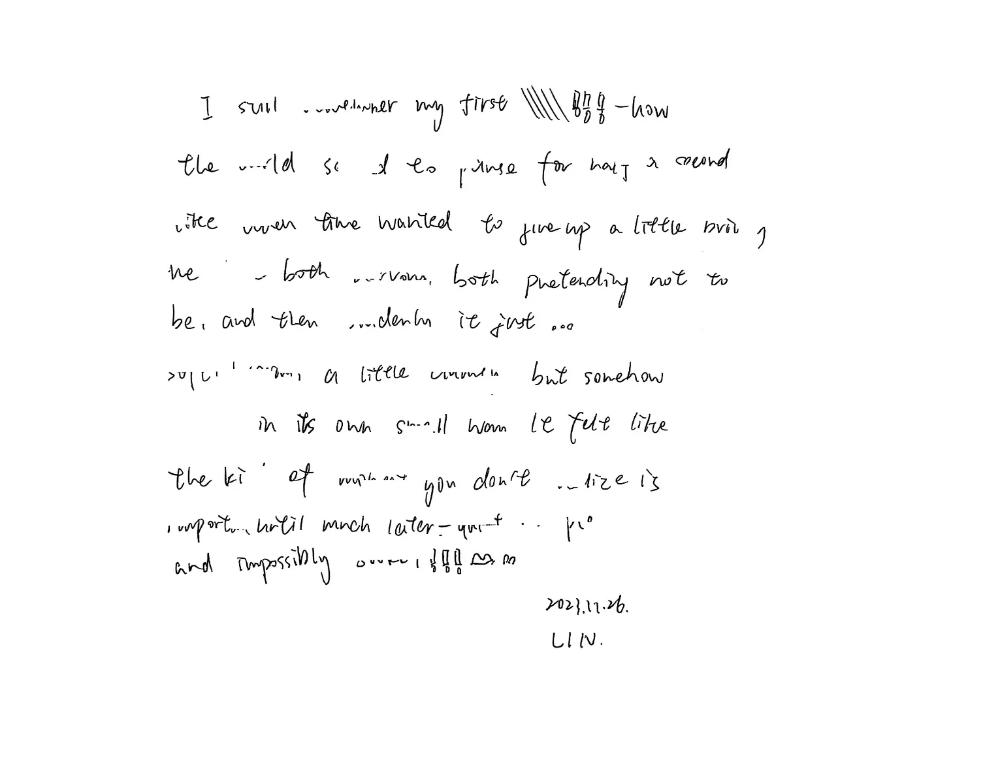
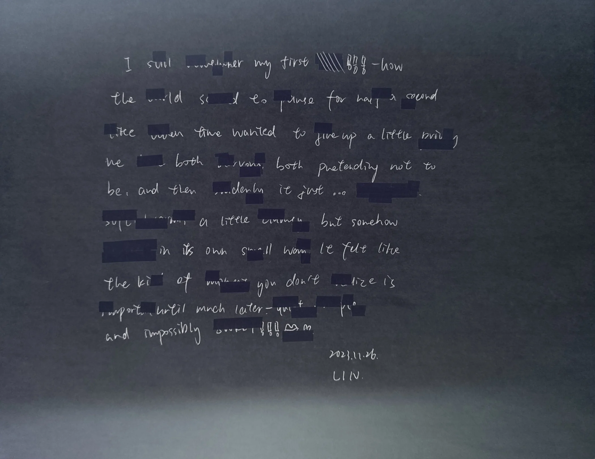
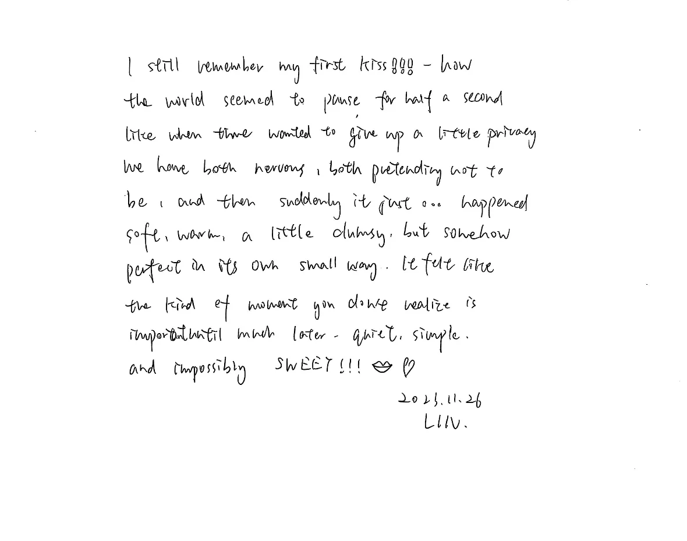
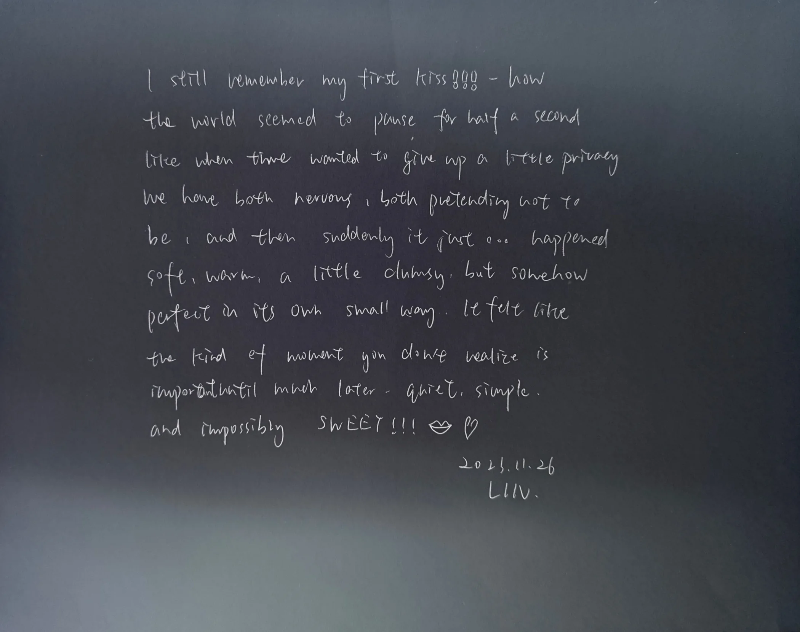
The memory continues in sound and motion.
Audio layer / 01:29
The audio piece can be heard separately from the film, as another register of the same remembered moment.